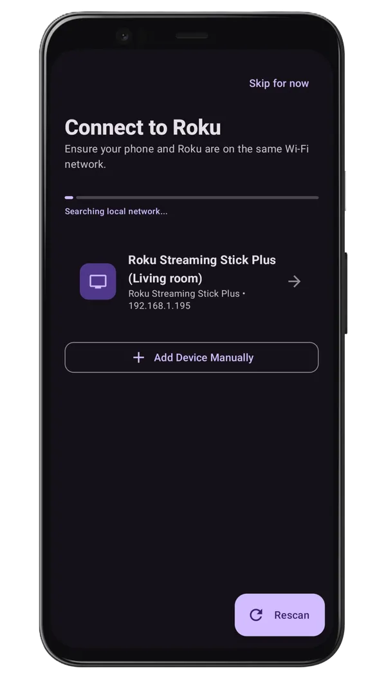

How to Connect Roku to Wi-Fi Without a Remote: Step-by-Step Guide
It's a frustrating situation: you've lost your physical Roku remote, you need to connect your Roku device to a new Wi-Fi network (perhaps you've moved, got a new router, or are staying at a friend's place), and your mobile remote app can't find the Roku because it isn't online yet.
Because mobile remote control apps require both your smartphone and your Roku device to be connected to the exact same Wi-Fi network, a disconnected Roku device is essentially invisible to your phone. But don't run out to buy a new physical remote just yet. In this guide, we'll explain the clever "Mobile Hotspot Trick" and other reliable workarounds to get your Roku connected to Wi-Fi without a physical remote.

Method 1: The Clever "Mobile Hotspot Trick" (Easiest Method)
The hotspot trick is a brilliant workaround that "tricks" your Roku into thinking it's connecting to its old, familiar Wi-Fi network. By setting up a mobile hotspot with the exact same name (SSID) and password as your previous Wi-Fi network, your Roku will connect to it automatically. Here's exactly how to do it.
You will need two devices for this to work successfully—one device to act as the Mobile Hotspot (Device A), and another device to run the Roku remote app (Device B).
Step-by-Step Hotspot Setup
- Find your previous Wi-Fi details: You must know the exact SSID (Wi-Fi network name) and password of the Wi-Fi network that your Roku was last successfully connected to.
-
Setup the Hotspot (Device A):
- Go to your phone settings and turn on Mobile Hotspot or Personal Hotspot.
- Rename the hotspot's name (SSID) to match the exact name of your previous Wi-Fi network. Note: This is case-sensitive!
- Set the hotspot password to the exact password of that old Wi-Fi network.
- Wait for the Roku to Connect: Turn on your Roku TV or Roku streaming stick. Since the hotspot is broadcasting the exact SSID and password the Roku remembers, the Roku will automatically connect to it within a minute or two.
-
Connect the Second Phone (Device B):
- Connect your second smartphone (Device B) to the mobile hotspot you just created on Device A.
- Download and open the Roku TV Remote Control app on Device B.
- The app will auto-discover the Roku TV now that both are on the same hotspot network. Tap connect!
-
Change to the New Wi-Fi:
- Using your remote app, navigate to Settings > Network > Set up connection > Wireless on your Roku screen.
- Search for your new, permanent Wi-Fi network and select it.
- Enter the new password. Once the Roku connects to the new Wi-Fi, it will disconnect from your mobile hotspot.
- Turn off your mobile hotspot, connect your phone to the new Wi-Fi network, and continue using the app as your permanent remote!
Method 2: The Physical Ethernet Workaround (Fast & Stable)
If your Roku model has an Ethernet port (like the Roku Ultra, older Roku 3, or select smart Roku TVs), this method bypasses wireless configuration altogether.
- Plug in the Ethernet Cable: Connect an Ethernet cable directly from your internet router to the Ethernet port on your Roku device.
- Wait for Connection: The Roku will automatically detect the wired connection and connect to the internet.
- Connect the App: Connect your Android phone to the Wi-Fi network broadcasting from the exact same router. Open the Roku TV Remote Control app, and it will immediately discover your Roku device over the network.
- Configure Wi-Fi (Optional): If you want to switch your Roku to a wireless connection so you can unplug the Ethernet cable, navigate to Settings > Network > Set up connection > Wireless using your app, select your wireless network, and save it.
Method 3: Temporary Router SSID Match (Without Two Devices)
If you don't have two mobile devices for the hotspot trick, but you have access to your home's new Wi-Fi router configuration interface:
- Log in to your new Wi-Fi router's admin portal (usually by typing `192.168.0.1` or `192.168.1.1` in a web browser).
- Temporarily change your router's Wi-Fi network name (SSID) and password to match the old network credentials your Roku remembers.
- Your Roku TV will automatically connect to your router.
- Connect your phone to this network, open the Roku TV Remote Control app, and connect to the TV.
- Now, use the app to change the Roku network connection to a guest network or configure it while you change the main router's settings back. Alternatively, you can just keep the router configured with the old SSID permanently so you don't have to change all your other home devices!
Why Choose Roku TV Remote Control App?
Once you get your Roku back online, using a reliable controller application makes navigating your favorite channels a breeze. Here is why the Roku TV Remote Control app stands out:
- No Ads on Remote Tab: We understand how annoying it is to have ads pop up while you are trying to turn down the volume. The main remote controller tab is completely clean and ad-free.
- Intelligent Keyboard Sync: Avoid typing search terms letter-by-letter on the screen. Sync your smartphone keyboard to type effortlessly.
- One-Tap Connection: Instant discovery and reliable local Wi-Fi pairing.
Conclusion
Getting your Roku connected to a new Wi-Fi network without a remote control isn't impossible. With the hotspot trick, router manipulation, or a simple ethernet connection, you can get online in less than ten minutes. Keep the Roku TV Remote Control app installed on your Android phone so you are always prepared, whether your physical remote gets lost under the couch cushions or breaks.
Frequently Asked Questions
How do I connect Roku to WiFi without a remote?
You can use an ethernet cable, a mobile hotspot with the same credentials, or a Roku remote app if already on the same network.
Will a universal remote work to connect to WiFi?
Yes, a compatible universal IR remote can navigate the menus to connect to WiFi.